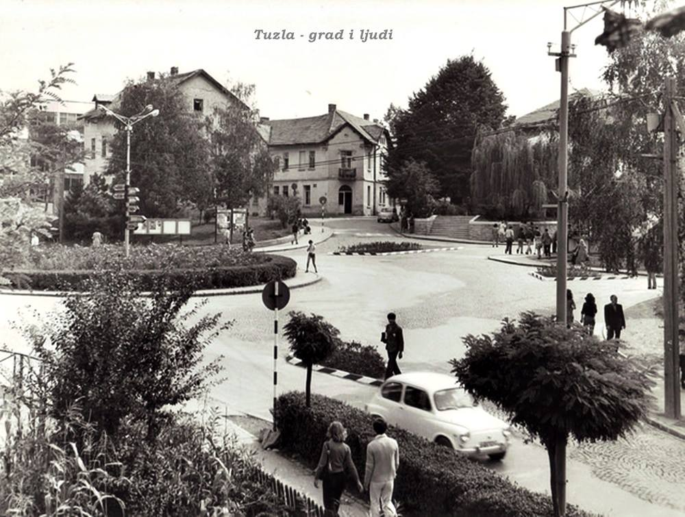
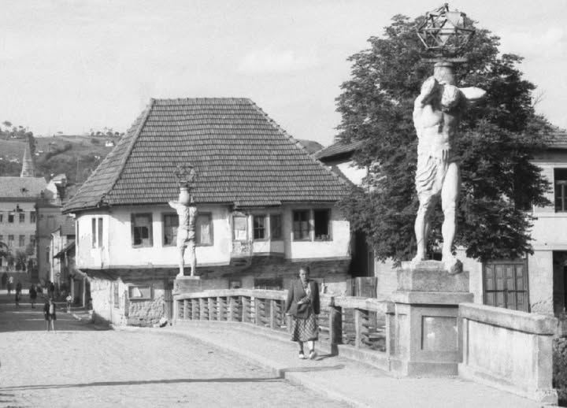
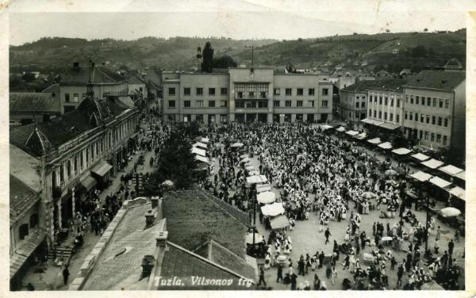
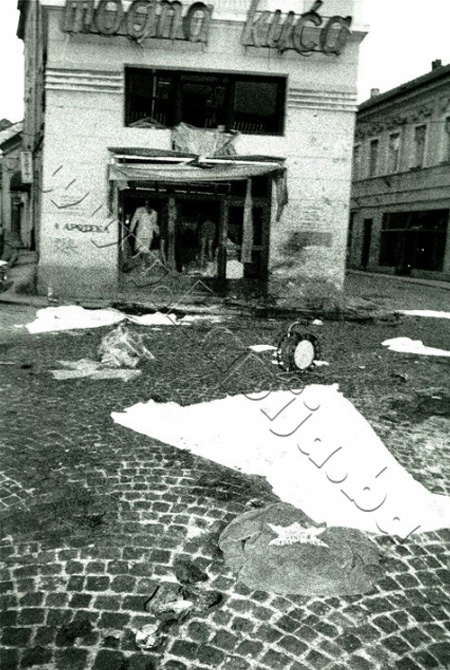
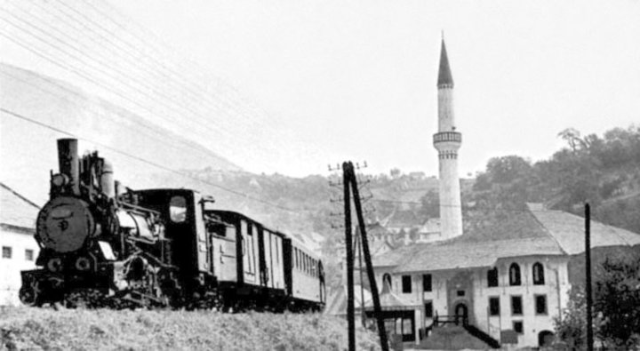
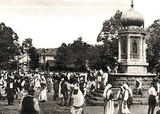

Digitalni Arhiv: Vremenska Kapsula Tuzle
Ovdje čuvamo fragmente prošlosti koji polako nestaju.
Hronologija srušenih i izmijenjenih simbola
| Lokalitet | Godina/Period | Vrsta zapisa | Današnji status |
|---|---|---|---|
| Hotel Bristol | 1908. | Razglednica | Hotel Mellain |
| Stara Gimnazija | 1899. | Fotografija | Park - Slanac |
| Kino Centar | 1912. | Fotografija | Zatvoreno |
| Zgrada Barok | Austrougarski period | Fotografija | Rekonstruisano |
| Slana Banja | 1930-te | Fotografija | Rekonstruisano |
Galerija artefakata






Vremenska linija Tuzle
Ključni momenti koji su oblikovali grad soli - od prvih zapisa do savremenog doba.
-
/* ovu ideju za cik-cak raspored kartica je generisao AI */
-
Antičko doba · 2. st. p.n.e.
Ilirsko vađenje soli
Ilirska plemena počela su eksploatisati slane izvore na području današnje Tuzle. Sol je bila dragocjeno dobro kojim se trgovalo s primorskim narodima, što je gradu dalo prvobitan ekonomski značaj.
Prahistorija -
Bosanska kraljevina · 12. – 15. st.
Tuzla u Bosanskoj kraljevini
Prije dolaska Osmanlija, grad je bio poznat kao Soli ili Gornja i Donja Tuzla i nalazio se pod upravom bosanskih vladara. Sol je i tada bila strateški resurs - bosanski vladari kontrolirali su izvoz soli prema Jadranskom moru i unutrašnjosti Balkana, čineći grad važnom kapicom kraljevine.
Bosanska kraljevina -
Osmanski period · 1463.
Tuzla pod osmanskom vlašću
Osmanlije preuzimaju grad i daju mu ime Tuz-la ("mjesto soli"). Grad se razvija kao važno administrativno i trgovačko središte Bosanskog sandžaka, a solana ostaje ključni privredni resurs.
Osmanski period -
1878. — 1918.
Austrougarska uprava
Austrougarska monarhija donosi modernizaciju: grade se škole, bolnice, industrijska postrojenja i prva tramvajska pruga u BiH. Tuzla postaje industrijski grad sa velikom rudarskom tradicijom.
Austrougarski period -
1888.
Česma na Skveru
Izgrađena česma na centralnom gradskom trgu - Skveru. Postaje simbol javnog života i okupljalište Tuzlaka. Danas je zaštićeni kulturno-historijski spomenik Bosne i Hercegovine.
Arhitektura -
1899.
Stara Gimnazija - prva moderna škola
Otvorena Stara Tuzlanska Gimnazija, jedna od prvih modernih obrazovnih ustanova u BiH. Zgrada austrougarskog stila stojeći je svjedok kulturnog napretka koji je grad doživio krajem 19. vijeka.
Obrazovanje -
25. maj 1995.
Tragedija na Kapiji
Granatiranje centralnog gradskog trga za vrijeme agresije odnijeo je živote 71 mladog Tuzlaka. Kapija postaje vječno mjesto sjećanja i simbol otpora. Svake godine 25. maja grad se zaustavlja u šutnji.
Savremena historija -
2004.
Panonska jezera - novi simbol Tuzle
Na površini gdje su nekada bili aktivni rudnici soli nastala su artificijelna Panonska jezera, turistički i rekreativni centar koji postaje prepoznatljiv simbol savremene Tuzle i njene transformacije.
Savremeno doba
Kategorizacija zapisa
-
Materijalni artefakti
-
Arhitektura
- Neolitsko sojeničko naselje
- Turalibegova (Poljska) džamija
-
Lični predmeti
- Pisaća mašina Meše Selimovića
- Rudarska oprema i "Lampaši"
-
Arhitektura
-
Usmena predanja
-
Legende
- Legenda o tuzlanskoj kozi
- Legenda o Panonskom moru
-
Anegdote
- Meša prosvjetar
-
Legende
Tuzla kroz vrijeme
„Zemlja ćuti, kamen pamti, a čovjek je uvijek na gubitku u borbi sa vremenom. I ova tišina što se uvukla u zidove, u kosti i u sjećanja, jedini je pravi svjedok da smo bili, da smo se nadali i da smo trajali. Čovjek prođe, ugasne kao svijeća, dok gore ovi obrisi onoga što je nekad bila nečija radost, nečija tjeskoba.
Ne pišem ovo da bih dokazala šta je bilo, jer istina je ionako varljiva u tuđim očima. Pišem da bih sačuvala onaj drhtaj koji se javi kad prođeš pored mjesta gdje je nekad stajala kuća, a sada tamo nema ništa.
Tuzla nije samo gomila kamena i soli. Ona je svjedok naših trajanja, tjeskoba i nada koje su se taložile pod njenim krovovima. Sve se ionako mijenja, ruši i ponovo zida. Sve nestaje u ponorima da bi izronilo opet, neprepoznatljivo i tuđe. Ali ono što ostaje, ono što ni vrijeme odnijeti ne može, jeste trag ostavljen onima koji dolaze. Da u tuđim sjenkama prepoznaju svoje lice i da po onome što je bilo, napokon saznaju ko su oni sami.“
Istražite mapu Tuzle
Kliknite na označenu lokaciju na mapi da vidiš više informacija.
- Znamenitosti
- Historija
- Priroda
- Industrija
Klikni na lokaciju za detalje.
Glas građana
"Moram pohvaliti tim za ovakvu dobru stranicu."
"Svaka ulica ima svoju priču, a AURUM ih čuva."
"Konačno digitalni arhiv kakav naš grad zaslužuje."